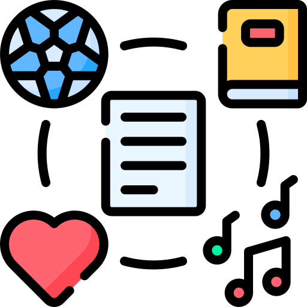

自己紹介と背景
日本での挑戦と学習
私はミャンマー出身で、現在日本の京都で生活し、ITビジネスやWeb開発技術を熱心に学んでいます。日本に来てから、新しい文化や言語を学ぶことに日々挑戦しています。
学習の主な焦点は、Webサイトの骨格を作るHTML/CSSと、動きや機能を与えるJavaScript、さらにC、Python、Javaなどのプログラミング言語です。開発を通じて、論理的な思考力と問題解決能力を磨いています。
作品
ロゴデザイン（抹茶）
Affinity Designerを使って抹茶のロゴを制作しました。シンプルで分かりやすいデザインを意識しています。
ロゴデザイン（自然）
自然をイメージしたロゴをデザインしました。色合いやバランスにこだわっています。
サムネイルデザイン
動画用のサムネイルを作成しました。目を引くレイアウトとカラーを工夫しています。

興味・趣味
読書（小説）
特にSF小説やファンタジーが好きで、複雑な世界観や設定を読み解くことが、プログラミングにおける論理的思考のトレーニングにも繋がっていると感じています。週末は静かなカフェで過ごすことが多いです。

マンガ・アニメ
日本のマンガやアニメも大好きで、特に「ONE PIECE」などの冒険物語にいつも刺激を受けています。物語を楽しみながら、日本語の日常会話や表現の勉強にも役立てています。
Favorite Music
0:00
0:00